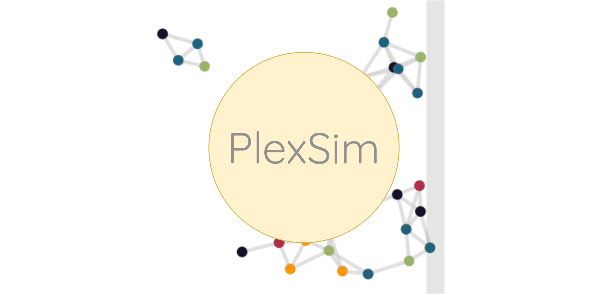

Table of Contents

Welcome to Plexsim!
Fast and general toolbox for simulation of complex adaptive systems written in cython. It provides:
- Fast general modeling framework for many classical dynamics (see docs)
- Readable
- Coding for humans. Leverages cython readability and allows for free development in python
-
Extensability
- Extensions can be written in python or cython directly
-
Quick development time
- quickly implement an idea in python and slowly convert the problem to cython (compiled-based)
-
Graph-based
- Simulate your favorite dynamics on any networks structure
-
Graph-free
- For spatio-temporal models the framework allows for using agent-based simulation free of static structures
N.b. this is a work in progress. Docs are hosted here, please see the quickstart in the docs.
Showcase
 Example systems. Each subplot contains a lattice
graph (64x64 = 4096 nodes) simulated for different
dynamics. See the docs page the available models.
Example systems. Each subplot contains a lattice
graph (64x64 = 4096 nodes) simulated for different
dynamics. See the docs page the available models.
Installation
- Clone the repo
git clone git@github.com:cvanelteren/PlexSim.git && cd Plexsim - Install the requirements
pip install --file requirements.txt
Current versions are developed on
linux.
Troubleshooting
Mac
It is known that compiling with cython on mac is
difficult due to the gcc compiler being
replaced with clang on apple. This toolbox
depends on openmp and this could cause
problems on MacOS.
GCC versions
The codebase is tested and developed on gcc =
10.2.0; higher versions give symbol errors at the
time of writing.
License
PlexSim is released under the GNU-GPLv3 license
Powered by

Notes
Cannot have static pyobjects, this causes a segfault in pybind11. Use atexit for cleaning them up.